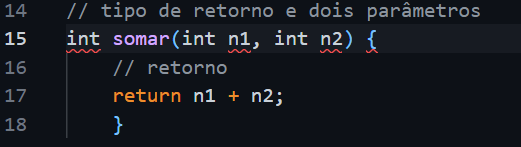
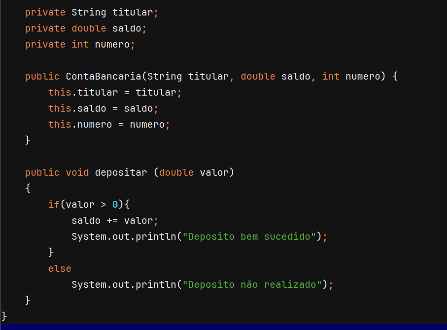

Programação em Java
Variáveis
Em Java, aprendemos sobre variáveis, que são espaços na memória reservados para armazenar dados, e os tipos de dados, tal como: Int, Boolean e Double.
Além disso, vimos que cada tipo de dado tem uma quantidade de bits, sendo que Boolean é a mais leve (1 bit) e Long e Double, os mais pesados (64 bits).
Operadores
Há também os operadores do Java. Seus tipos podem ser: lógico, atribuição, aritmético, condicional e ternário. Esse primeiro é usado para quando precisamos verificar dois ou mais testes lógicos. Já o aritmético é usado para cálculos ou concatenação(+). O de atribuição é para atribuir valor a uma variável. Os operadores condicionais são para verificar condições entre dois elementos. Por fim, o operador ternário é para comparações simples que executa uma instrução se verdadeiro ou outra instrução, caso falso. Segue um exemplo desses operadores:

Link para o repositório das atividades da lista1: lista1
Estruturas de Decisão
Nessa etapa, vimos a estrutura If/Else. If verifica se a condição é verdadeira, se for, executa seu bloco de código. Se não for, o bloco de Else será executado.

Aqui, o valor 4 está sendo analisado. Se ele for menor que num1(variavel), o if será executado. Se não, o else será executado.
Também há outra estrutura de decisão, chamada Switch. Usamos quando queremos deixar uma sequencia de verificações organizada sem utilizar if/else encadeado. Segue um exemplo

O exemplo mostra que se valor(valor analisado) for 1, o case 1 será satisfeito e encerrará as verificações (break). Se nenhum case for satisfeito, o default será executado.
Link para o repositório das atividades da lista2: lista2
Estruturas de Repetição
Os laços de repetição são muito úteis para fazer algo repetidas vezes sem precisar reescrever código. Um deles é o For que tem esta sintaxe:

Ele é muito usado quando queremos evitar looping infinito, pois, logo depois da palavra-chave for, há um parenteses que receberá: variável de controle, teste lógico e incremento ou decremento. Isso garante que o looping terá uma condição de parada.
Outra estrutura é a While. Ela tem uma sintaxe mais simples que o For, pois apenas testa uma condição e executa o código de seu bloco. Porém precisa-se tomar cuidado para que o programa não caia em looping infinito. Segue sua sintaxe:
Uma variação do While é Do/While, que executa pelo menos uma vez o código e, em seguida, avalia a condição do laço. Sua sintaxe é:

Esse laço é bastante usado em validações de entrada do usuário.
Link para o repositório das atividades da lista3: lista3
Vetores
Essas são variáveis que reservam espaços da memória que podem alocar diversos valores do mesmo tipo de dado em sequência. Para acessar os valores é preciso dizer o nome da variavel e o indice no qual se encontra o valor buscado. Exemplo:

Link para o repositório das atividades da lista4: lista4
Funções
Ainda vimos sobre funções, que são bloco de instrução que executam seu código quando invocadas. Elas podem ter parâmetros e um tipo de retorno. Segue um exemplo:
Uma grande vantagem da função é que você pode escrevê-la em outro lugar do programa e depois chamá-la para a Main, onde roda o programa. Outra vantagem é a recursividade, que nada mais é do que chamar a função dentro dela mesmo. Esse recurso é capaz de aumentar a velocidade de execução e reduz linhas de código.
Link para o repositório das atividades da lista5: lista5
Programação Orientada a Objeto
Depois de função, começamos a estudar sobre Programação Orientada a Objeto. Essa técnica tem quatro pilares fundamentais: Encapsulamento, Abstração, Polimorfismo e Herança.
Encapsulamento visa controlar o acesso aos dados da classe;
Abstração tem o propósito de ocultar detalhes complexos que levam a resolução do problema;
Herança é a capacidade de classes receberem atributos e métodos de outras classes;
Polimorfismo é a possibilidade de classes apresentarem comportamentos e formas diferentes umas das outras.
Desenvolvemos um projeto chamado contaBancaria e nele exercitamos os primeiros conceitos aprendidos de POO. Criamos uma classe chamada ContaBancaria, definimos que seus atributos seriam privados, criamos um construtor e os métodos da classe.
Link para o repositório das atividades da lista6 : lista 6
Java FX
No fim do semestre, vimos ainda a biblioteca Java FX, usada para o desenvolvimento de interface gráfica
Desenvolvemos alguns projetos em conjunto, como o ScreenSaver1 e ScreenSaver2, onde praticamos conceitos de programação orientada a objeto.

Link para o repositório das atividades relacionadas a Java FX Atividades Java FX
Ver todos os projetos: